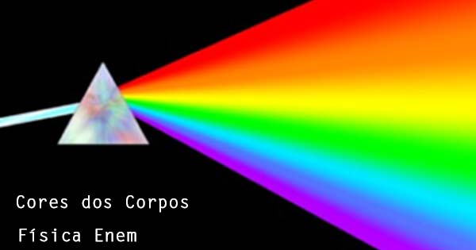
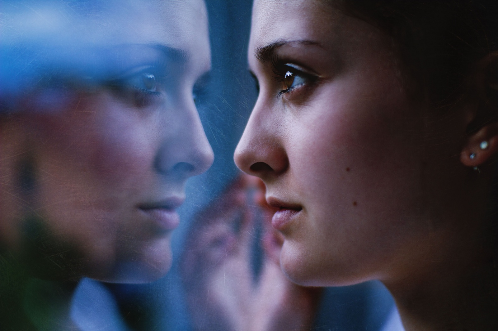

A formação da imagem é utilizada em diversas áreas do cotidiano, principalmente em equipamentos ópticos. Ela permite corrigir a visão por meio de óculos e lentes de contato, capturar fotos com câmeras, ampliar objetos em microscópios, observar corpos celestes com telescópios e projetar imagens em telas. Esse princípio também é aplicado em diversos equipamentos médicos, contribuindo para diagnósticos e tratamentos.
.jpeg)
A luz branca é composta por várias cores, que podem ser separadas por um prisma. As cores percebidas dependem da absorção e reflexão da luz pelos objetos. O espectro visível vai aproximadamente de 380 nm (violeta) a 750 nm (vermelho). Cores primárias da luz (RGB) podem ser combinadas para criar outras cores. Cores também têm efeitos psicológicos e funcionais, como chamar atenção ou transmitir calma.

Espelhos planos refletem a luz formando imagens virtuais com mesma altura e distância do objeto. Espelhos côncavos concentram a luz e podem formar imagens reais ou virtuais, dependendo da posição do objeto. Espelhos convexos espalham a luz, ampliando o campo de visão, usados em retrovisores e segurança. A lei da reflexão: ângulo de incidência = ângulo de reflexão. Reflexão também explica fenômenos naturais, como o brilho da água ou o espelho do céu em lagos.

O olho funciona como uma câmera: a córnea e o cristalino focam a luz na retina. A retina possui células fotorreceptoras: cones (cores) e bastonetes (luz/fraca luminosidade). O nervo óptico transmite sinais da retina para o cérebro, que processa a imagem. O ponto cego é onde o nervo óptico sai do olho, sem receptores de luz. Problemas de refração (miopia, hipermetropia) ocorrem quando a luz não foca corretamente na retina.
.jpeg)
A bola da Copa do Mundo é produzida com materiais resistentes e tecnologia que garantem precisão e bom desempenho. Ela tem formato esférico, massa entre 410 e 450 gramas e pressão interna adequada para proporcionar velocidade, controle e estabilidade. Sua superfície reduz a resistência do ar e melhora a trajetória da bola. Além disso, o atrito com a chuteira e o gramado facilita o controle, enquanto a rotação durante o chute pode gerar o efeito Magnus, fazendo a bola fazer curvas.